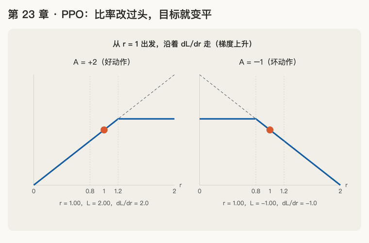

第 23 章 · 从 TRPO 到 PPO：一批数据多用几次，但每次别改太多
本章回答：策略梯度每批数据只能走一步，太浪费；想多走几步，"数据是旧策略采的"怎么办？为什么要限制每次改动的幅度？PPO 的 clip 到底在剪什么？
讲解日期：2026-11-13 · 上一章：第 22 章 Actor-Critic、优势函数与 GAE · 下一章：第 24 章 收尾
对应原文：CS 285 第 9 讲（lec-09.txtL25–L117：The problem with policy gradients、Importance sampling、Clipped importance weights → PPO）、第 10 讲（lec-10.txtL38–L176：policy gradient as policy iteration、KL 约束、TRPO、"PPO with clipping is a heuristic approximation to PPO with KL"）；TRPO 论文（papers/trpo-1502.05477.txtL406–L412）；PPO 论文（papers/ppo-1707.06347.txtL142–L182，式 7，图 1）
本章缩写：IS = Importance Sampling（重要性 / 采样）；r(θ)：probability ratio（概率比率）\(\pi_\theta / \pi_{\theta_{old}}\)，不是奖励；old：旧策略（采数据时的那份）；TRPO = Trust Region Policy Optimization（信任 / 区域 / 策略 / 优化）；PPO = Proximal Policy Optimization（近端 / 策略 / 优化，proximal 是"挨得近"）；KL = Kullback–Leibler divergence（两位统计学家的姓 / 散度：衡量两个概率分布差多远）；clip：剪裁（把数限制在一个范围内）；ε：这里是剪裁范围（常取 0.2），不是第 13 章的探索概率。全部缩写见 附录 · 缩写与术语表
讲解
第一步：问题：一批数据只能走一步（2026-11-13）
第 22 章的循环：跑一批轨迹 → 算优势 → 演员走一步梯度 → 扔掉这批数据 → 重新跑。
为什么只能走一步（lec-09.txt L25–L38）：策略梯度 \(\mathbb{E}_{\pi_\theta}[\hat A\,\nabla\log\pi_\theta]\) 里的期望，是"按当前策略 \(\pi_\theta\) 采样"的平均。走完一步，θ 变了，手上这批数据就不再是当前策略采的，严格说不能再用。
代价：在模拟器里跑一批轨迹可能要几分钟，用来只走一小步梯度；L33–L38："high variance means we usually want bigger batches … and smaller learning rates … this quickly becomes intractable"。
我们想要的（L39–L49）：采一批数据，在上面走好几步梯度，把数据榨干。要解决两个问题：
- 数据是旧策略采的，怎么"修正"成新策略的期望？（第二步）
- 走太多步，新策略离旧策略太远，修正就不准了，怎么办？（第三、四步）
一句话：策略梯度的期望要求数据来自当前策略，所以一批数据只能走一步，很浪费；想多走几步要先解决"数据过期"。
第二步：重要性采样：用旧策略的数据，估新策略的平均（2026-11-13）
问题：样本是按概率 \(p_{\text{旧}}\) 抽的，想估的是按 \(p_{\text{新}}\) 的平均。
重要性采样 importance sampling（lec-09.txt L51–L53）：每个样本乘一个权重 \(\frac{p_{\text{新}}(x)}{p_{\text{旧}}(x)}\)：
为什么对：右边写开是 \(\sum_x p_{\text{旧}}(x)\frac{p_{\text{新}}(x)}{p_{\text{旧}}(x)}f(x) = \sum_x p_{\text{新}}(x)f(x)\)，\(p_{\text{旧}}\) 正好约掉。
类比：民调加权。 你调查了 100 人，男女各 50；但真实人口是女 80%、男 20%。直接平均会让男性的意见占比太大。做法是给每个女性受访者乘 0.8/0.5 = 1.6、每个男性乘 0.2/0.5 = 0.4，加权以后就是"按真实人口"的平均。
用数字验证：两个动作，奖励 1 和 0。旧策略各选 0.5（数据就是这样采的），新策略选 0.8 和 0.2。手上的两个样本：选了动作 1（奖励 1）、选了动作 2（奖励 0）。
新策略的真实平均奖励 = 0.8 × 1 + 0.2 × 0 = 0.8 ✓。用旧数据估出了新策略的平均。
用在策略梯度上（lec-09.txt L54–L72）：每个时刻乘一个概率比率：
目标变成"替代目标 surrogate objective"：
在 θ = θ_old 时 r = 1，它的梯度正好等于普通的策略梯度（第 20 章的"方便恒等式"）；θ 离开 θ_old 以后，还能用这批旧数据接着优化它。
一句话：重要性采样给每个样本乘 \(p_{\text{新}}/p_{\text{旧}}\)，就能用旧数据估新期望；策略梯度里这个比率叫 \(r_t(\theta)\)，目标变成 \(\mathbb{E}[r_t\hat A_t]\)。
第三步：别改太多：信任区域与 KL（2026-11-13）
问题：\(L(\theta) = \mathbb{E}[r_t\hat A_t]\) 可以一直优化下去吗？
不行，有两个原因：
- 比率会变得极端（
lec-09.txtL75–L83）：新策略某个动作的概率涨到旧策略的 10 倍，权重就是 10；少数几个样本的权重巨大，估计的方差就爆了（"once the weights are too far from 1.0, the estimator is no longer useful"）； - 状态分布也变了（
lec-10.txtL47–L81）：策略一变，智能体会走到不同的状态去，旧数据里根本没有这些状态。CS 285 第 10 讲证明了：只要新旧策略"差得不多"，忽略状态分布的变化就是可以的（L80–L81："it's 'OK' to ignore the state distribution if we do not change the policy 'too much'"）。
所以要限制每次改动的幅度。怎么衡量"两个策略差多少"？用 KL 散度（lec-10.txt L85–L92）：
- 两个分布完全一样时是 0，差得越多越大；
- 它是"按旧策略平均的 log 比率"，用旧数据就能估。
TRPO（TRPO 论文 L406–L412；lec-10.txt L156–L163）：在"KL 不超过一个小数 δ"的约束下，最大化替代目标：
这个"允许活动的小范围"就叫信任区域 trust region：在旧策略附近，替代目标是可信的；跑出这个范围就不可信了。
类比：开车用导航。 导航（替代目标）只在你附近一小段路上可靠，你按它开一小段，重新定位，再开一小段；而不是看一眼导航就闭着眼开 100 公里。
TRPO 要解一个带约束的优化，用到二阶导数和共轭梯度（L161–L163），实现起来复杂。
一句话：比率太极端、状态分布会变，所以每次只能在旧策略附近改；TRPO 用 KL ≤ δ 划出信任区域，但实现复杂。
第四步：PPO：把比率剪在 [1 − ε, 1 + ε] 里（2026-11-13）
PPO 的想法（lec-09.txt L84–L117；PPO 论文式 7，L142–L153）：不解约束优化，直接在目标里把比率剪掉，让它"改多了也没好处"：
- \(\text{clip}(r, 1-\varepsilon, 1+\varepsilon)\)：r 小于 1 − ε 就当成 1 − ε，大于 1 + ε 就当成 1 + ε；ε 常取 0.2（
lec-09.txtL94 说"try 0.1"也行）； - min：在"不剪"和"剪了"两个里取更小（更保守）的那个。
分两种情况读（PPO 论文 L146–L155，图 1）：
① 优势 A > 0（好动作，想让它更可能）：r 往大调。但涨过 1 + ε 以后，剪裁让目标不再增加，梯度变成 0：好动作的概率最多涨到旧的 1.2 倍，这一批数据就不再推它了。
② 优势 A < 0（坏动作，想让它更不可能）：r 往小调。低于 1 − ε 以后目标不再变化，梯度为 0：最多压到旧的 0.8 倍。
用数字算（ε = 0.2）：
| r | A | 不剪 r·A | 剪了 clip(r)·A | min | 对 r 的梯度 | 读法 |
|---|---|---|---|---|---|---|
| 1.1 | +2 | 2.2 | 2.2 | 2.2 | +2 | 还在范围内，继续推 |
| 1.5 | +2 | 3.0 | 1.2 × 2 = 2.4 | 2.4 | 0 | 涨过头了，停 |
| 0.9 | −1 | −0.9 | −0.9 | −0.9 | −1 | 还在范围内，继续压 |
| 0.5 | −1 | −0.5 | 0.8 × (−1) = −0.8 | −0.8 | 0 | 压过头了，停 |
| 0.5 | +2 | 1.0 | 0.8 × 2 = 1.6 | 1.0 | +2 | 好动作被压低了：不剪，赶紧推回来 |
最后一行很关键：min 保证剪裁只在"改得对、但改过头"时起作用；如果改错了方向（好动作的概率反而降了），目标照样有梯度，会把它拉回来（PPO 论文 L150："we only ignore the change in probability ratio when it would make the objective improve"）。
PPO 的完整流程（第 22 章第四步 + 本章）：
循环：
1. 用 π_old 跑一批轨迹
2. 训练评委，按 GAE 算优势 Â，归一化
3. 在这批数据上做 K 个 epoch（比如 10 轮）的小批量梯度上升，目标是 L^CLIP
4. π_old ← π_θ
lec-10.txt L171："PPO with clipping is a heuristic approximation to PPO with KL"：剪裁是对 KL 约束的一个简单近似。它简单、稳、好调，成了 2017 年以后最常用的强化学习算法：机器人运控（Isaac Gym 里的腿足机器人）、LLM 的 RLHF（InstructGPT）都用它。
一句话：PPO 把比率剪在 [0.8, 1.2]，改得对但改过头时梯度为 0，改错方向时照样拉回；一批数据可以放心跑好几个 epoch。
动画演示：PPO 目标随比率 r 的形状：A > 0 和 A < 0 两张图

可交互版：animations/l23-ppo.html（要能点按钮、拖滑块，需要用本地服务打开，见 animations/README.md"跑起来看"）。
怎么看：
- 左图 A = +2，右图 A = −1；横轴是比率 r，虚线是不剪的 r·A，实线是 \(L^{\text{CLIP}}\)（PPO 论文图 1）；
- 一个点从 r = 1 出发，沿梯度方向移动：左图往右走到 1.2 就停（平了），右图往左走到 0.8 就停（第四步表格前四行）；
- 再演示表格最后一行：A > 0 但 r = 0.5，实线有斜率，点被拉回来；
- 滑块调 ε：ε 越小，平台越早出现，每批数据能改的越少。
练习与作答记录
题 1：旧策略选动作 a 的概率是 0.4，新策略是 0.6。比率 r 是多少？ε = 0.2 时，如果 A = +1，\(L^{\text{CLIP}}\) 这一项是多少？对 r 还有没有梯度？
作答：（待作答）
题 2：用重要性采样的思路解释：为什么旧策略采的数据，乘上 \(\pi_{\text{新}}/\pi_{\text{旧}}\) 就能用来估新策略？比率离 1 太远时有什么问题？
作答：（待作答）
题 3：第四步表格最后一行（r = 0.5，A = +2）为什么不剪？如果这里也剪掉会发生什么？
作答：（待作答）
口诀
一批数据只走一步太浪费，想多走几步要先解决数据过期；
重要性采样：乘 新/旧，旧数据估新平均；比率叫 r；
比率别太极端、策略别跑太远：信任区域，KL 不超过 δ；
PPO 剪比率：好的最多涨到 1.2 倍，坏的最多压到 0.8 倍；改对过头停，改错照拉。
本章复习卡片
- R40（重要性采样 \(\mathbb{E}_{\text{新}}[f] = \mathbb{E}_{\text{旧}}[\frac{p_{\text{新}}}{p_{\text{旧}}}f]\)；比率 \(r_t(\theta)\)；为什么每次只能改一点）
- R41（PPO 式 7：\(\min(r\hat A, \text{clip}(r, 1\pm\varepsilon)\hat A)\)；A > 0 / A < 0 两种情况；什么时候梯度为 0）
附录 · 延伸阅读
留给以后深入学习用，不影响本章主线。★ 是建议先读的。
推荐阅读
| 读什么 | 读哪里 | 读它为了什么 |
|---|---|---|
| ★ CS 285 第 9 讲 | cs285-slides/lec-09.txt L25–L117 |
一批数据只走一步的问题、重要性采样、剪裁 → PPO |
| ★ PPO 论文 | papers/ppo-1707.06347.txt L142–L182（式 7，图 1、图 2） |
剪裁目标的原文和图；§5 Algorithm 1 是完整流程 |
| CS 285 第 10 讲 | cs285-slides/lec-10.txt L38–L176 |
策略梯度 = 策略迭代、为什么可以忽略状态分布变化、KL、自然梯度、TRPO |
| TRPO 论文 | papers/trpo-1502.05477.txt L406–L412、L461 |
信任区域约束的原文 |
| ★ The 37 Implementation Details of PPO | blog/ppo-37-implementation-details.html |
复现 PPO 必读：优势归一化、value clipping、学习率退火、正交初始化…… |
CleanRL ppo.py |
cleanrl/cleanrl/ppo.py |
单文件 PPO：pg_loss1、pg_loss2、torch.max 那几行就是本章的式 7（写成最小化的负号版） |
| Hands-on-RL 第 11–12 章 | chinese/Hands-on-RL/第11章-TRPO算法.ipynb、第12章-PPO算法.ipynb |
中文：TRPO 和 PPO 的代码 |
数学原理
- 重要性采样恒等式：\(\mathbb{E}_{x\sim q}[\frac{p(x)}{q(x)}f(x)] = \mathbb{E}_{x\sim p}[f(x)]\)，要求 \(q(x) > 0\) 的地方覆盖 \(p(x) > 0\) 的地方。
- 替代目标的梯度：\(\nabla_\theta r_t(\theta)\big|_{\theta = \theta_{old}} = \frac{\nabla\pi_\theta}{\pi_{\theta_{old}}} = \nabla\log\pi_\theta\)，所以在 θ_old 处 \(\nabla L = \mathbb{E}[\hat A\nabla\log\pi]\)：第一步和普通策略梯度一样。
- KL 散度：\(D_{KL}(p\|q) = \sum p\log\frac pq \ge 0\)，等号当且仅当 p = q；不对称（\(D_{KL}(p\|q) \ne D_{KL}(q\|p)\)）。
- 策略改进下界（TRPO 的理论核心）：\(J(\pi') \ge J(\pi) + \mathbb{E}[r\hat A] - C\cdot\max D_{KL}(\pi\|\pi')\)；KL 小时替代目标的提升就是真实提升（
lec-10.txtL58–L81）。 - 剪裁目标是悲观下界：\(L^{\text{CLIP}} \le L^{\text{CPI}} = \mathbb{E}[r\hat A]\)，在 r = 1 附近两者一阶相同（PPO 论文 L151–L152："to first order around θold"）。
公式清单
| 公式 | 意思 |
|---|---|
| \(\mathbb{E}_{p}[f] = \mathbb{E}_{q}[\frac pq f]\) | 重要性采样 |
| \(r_t(\theta) = \frac{\pi_\theta(a_t \mid s_t)}{\pi_{\theta_{old}}(a_t \mid s_t)}\) | 概率比率 |
| \(L^{\text{CPI}}(\theta) = \mathbb{E}[r_t(\theta)\hat A_t]\) | 替代目标 |
| \(\max\ L^{\text{CPI}}\) s.t. \(\mathbb{E}[D_{KL}(\pi_{old}\|\pi_\theta)] \le \delta\) | TRPO |
| \(L^{\text{CLIP}} = \mathbb{E}[\min(r_t\hat A_t,\ \text{clip}(r_t, 1-\varepsilon, 1+\varepsilon)\hat A_t)]\) | PPO（式 7） |
代码对照：把本章的数字用代码算一遍
代码在
cs285-deep-rl/solutions/chapter-code/ch23_ppo.py，测试tests/test_ch17_24.py（检查表格五行的值和梯度）。
同一章的 Jupyter notebook：cs285-deep-rl/solutions/chapter-code/notebooks/ch23_ppo.ipynb（讲解和代码放在一起，一格一格边读边跑；代码都写在格子里，Colab 也能直接打开）。
bash cd cs285-deep-rl/solutions/chapter-code uv run python ch23_ppo.py
| 讲义 | 代码 | 跑出来 |
|---|---|---|
| 重要性采样例子 | importance_weighted_mean([1, 0], [0.8, 0.2], [0.5, 0.5]) |
0.8 |
| 表格五行 | ppo_term(ratio, adv)、grad_wrt_ratio(ratio, adv) |
+2.20/+2、+2.40/0、−0.90/−1、−0.80/0、+1.00/+2 |
关键几行：
r = torch.tensor(1.5, requires_grad=True)
L = torch.minimum(r * adv, torch.clamp(r, 1 - eps, 1 + eps) * adv)
L.backward(); r.grad # 0.0：被剪掉的部分没有梯度
代码里才看得到的：
torch.clamp在被剪住的区域梯度是 0，这正是"改过头就停"在代码里的实现方式，不需要额外写判断；- 实际代码里比率用
exp(new_logprob − old_logprob)算（log 相减再取 e 次方），比直接相除数值更稳；old_logprob必须在采样时存下来并detach()，否则梯度会穿到旧策略里去。